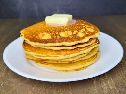

:
Fisher's Pancakes
Fisher's Chocolate Chocolate Chip Pancakes

Pancakes are probably everyone's favorite breakfast dish. You don't know how to make them though. Unfortunately, neither do I! For this recipe, I will simply list the directions on the back of a premade pancake mix box, but add my own twist!
Ingredients
- Pearl Milling Company Pancake Mix
- 2 Cups of Chocolate Chips
- Cocoa Powder
- Powdered Sugar
Now that you've got your ingredients ready, it is time to make Fisher's Chocolate Chocolate Chip Pancakes, or as I like to call them, Biden Cakes!
- Make your pancake batter following the instuctions on the box
- Add cocoa powder while mixing until the batter becomes a nice light chocolately brown color
- Add your chocolate chips
- Pour about 1/4 a cup of the mix onto a pan on medium head. Flip when bubbles stop appearing on the top. Repeat until no more batter remains.
- Sprinkle powdered sugar on top of the pancakes, and enjoy!
Home